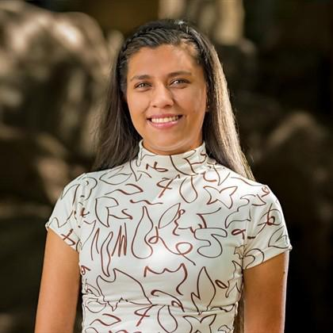

Sobre mí
Me considero una persona recta, honesta, responsable y puntual en el entorno en el que me desempeño. Tengo facilidad para trabajar en equipo y me relaciono con naturalidad con las personas que me rodean. Me gusta exigirme y que me exijan, siempre con el objetivo de mejorar. Además, disfruto asumir nuevos retos que promuevan la innovación. Aspiro a crecer profesionalmente, llegar muy lejos en mi carrera y consolidarme como una excelente profesional. Actualmente soy tecnóloga en Gestión de Redes de Datos y estudiante de Ingeniería de Sistemas.creatividad.